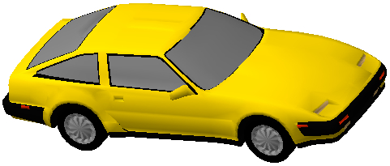
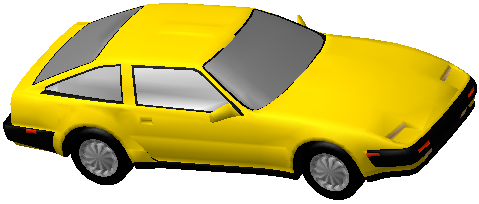
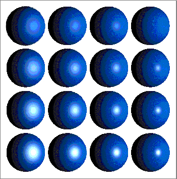
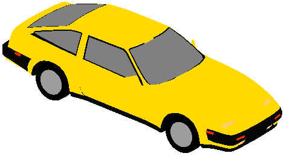

About Shader Objects
A shader object (or, more briefly, a shader) is a type of QuickDraw 3D object that you can use to manipulate visual effects that depend on the illumination provided by a view's group of lights, the color and other material properties (such as the reflectance and texture) of surfaces in a model, and the position and orientation of the lights and objects in a model. Shaders that affect the surfaces of geometric objects based on their material properties, position, and orientation (and other factors) are surface-based shaders. QuickDraw 3D supplies several surface-based shaders, and you can define your own custom surface-based shaders to create other special effects. For instance, you can define a custom surface-based shader to handle custom attributes you have attached to surfaces or parts of surfaces.The application of surface-based shaders occurs within the QuickDraw 3D shading architecture, an environment in which shaders can be applied at various stages in the imaging pipeline. This architecture provides well-defined entry points at specific locations along the imaging pipeline. At each such location, you can invoke a shader. This capability allows you to create both two-dimensional and three-dimensional visual effects.
The QuickDraw 3D shading architecture is implemented using an object-based class hierarchy. For each location in the imaging pipeline at which a shader can be invoked, a subclass of the shader object has been defined. The following sections describe the available classes of shader objects.
Surface-Based Shaders
Several of the base classes of shaders apply shading effects to the surfaces of geometric objects.
- Surface shaders are applied when calculating the appearance of a surface. A geometric object (or group of geometric objects) can be associated with a surface shader, which is called to evaluate the shading effect for each face, vertex, or pixel of the object. QuickDraw 3D currently defines one subclass of surface shaders:
- Texture shaders apply shading to an object using a texture. See "Textures" on page 14-10 for more information on textures and texture shaders.
- Illumination shaders determine the effects of the view's group of lights on the objects in a model. QuickDraw 3D currently defines three subclasses of illumination shaders. See "Illumination Models" on page 14-4 for more information on these illumination models.
Illumination Models
As you've seen, an illumination shader determines the effects of a view's group of lights on the objects in a model. In order for the lights to have any effect, you must attach an illumination shader to the view. QuickDraw 3D provides three types of illumination shaders.Lambert Illumination
The Lambert illumination shader implements an illumination model based on the diffuse reflection (also called the Lambertian reflection) of a surface. Diffuse reflection is characteristic of light reflected from a dull, nonshiny surface. Objects illuminated solely by diffusely reflected light exhibit an equal light intensity from all viewing directions. Figure 14-1 shows an object illuminated using the Lambert illumination shader. See also Color Plate 4 at the beginning of this book.Figure 14-1 Effects of the Lambert illumination shader

For a point on a surface, the Lambert illumination provided by i distinct lights is given by the following equation:Here, Ia is the intensity of the ambient light, and ka is the ambient coefficient. Od is the diffuse color of the surface of the object being illuminated. N is the surface normal vector at the point whose illumination is being evaluated, and Li is a normalized vector indicating the direction to the ith light source. Notice that if the dot product (N � Li) is 0 for a particular light (that is, if N and Li are perpendicular), that light contributes nothing to the illumination of the point. Ii is the intensity of the ith light source, and kd is the diffuse coefficient of the surface being illuminated (that is, the level of diffuse reflection of the surface).
As you can see, the intensity of the light reflected by a point on a surface depends solely on the ambient light and the diffuse reflection of the surface at that point.
- Note
- QuickDraw 3D does not currently provide a way to set the value of the diffuse coefficient of a surface directly. Instead, you must use the product kdOd as the surface's diffuse color. You specify a diffuse color by inserting an attribute of type kQ3AttributeTypeDiffuseColor into the surface's attribute set.
Phong Illumination
The Phong illumination shader implements an illumination model based on both diffuse reflection and specular reflection of a surface. Specular reflection is characteristic of light reflected from a shiny surface, where a bright highlight appears from certain viewing directions. Figure 14-2 shows an object illuminated using the Phong illumination shader. See also Color Plate 4 at the beginning of this book.Figure 14-2 Effects of the Phong illumination shader

For a point on a surface, the Phong illumination provided by i distinct lights is given by the following equation:Notice that the Phong illumination equation is simply the Lambert illumination equation with an additional summand to account for specular reflection. Here, R is the direction of reflection and V is the direction of viewing. The exponent n is the specular reflection exponent, and ks is the specular reflection coefficient. The specular reflection exponent determines how quickly the specular reflection diminishes as the viewing direction moves away from the direction of reflection. In other words, the specular reflection exponent determines the size of the specular highlight (a bright area on the surface of the object caused by specular reflection). When the value of n is small, the size of the specular highlight is large; as n increases, the size of the specular highlight shrinks.
The specular coefficient (or specular reflection coefficient), symbolized by ks in the equation above, indicates the level of the object's specular reflection. It controls the overall brightness of the specular highlight, independent of the brightness of the light sources and the direction of viewing.
Figure 14-3 shows an object illuminated using a variety of values for the specular reflection exponent and the specular coefficient. In this figure, the specular reflection exponent increases from left to right, resulting in a smaller specular highlight. In addition, the specular coefficient increases from top to bottom, resulting in a brighter specular highlight.
Figure 14-3 Phong illumination with various specular exponents and coefficients

- Note
- A surface's specular reflection coefficient is also called its specular control. You specify a specular reflection coefficient by inserting an attribute of type
kQ3AttributeTypeSpecularControlinto the surface's attribute set.
Null Illumination
The null illumination shader ignores the lights in a view's light group and configures the renderer to draw all objects using only the diffuse colors of those objects. The net effect of the this shader is to draw objects as if the only light source was an ambient light at full intensity. Figure 14-4 shows an object illuminated using the null illumination shader.Figure 14-4 Effects of the null illumination shader

For any point on a surface, the null illumination is given by the following equation:Here, Od is the diffuse color of the surface of the object being illuminated. As you can see, when the null illumination shader is active, all facets of an object are drawn the same color (unless different facets have attribute sets that override the diffuse color of the object).
Textures
As indicated earlier, QuickDraw 3D supports texture shaders that allow you to perform texture mapping, a technique wherein a predefined image (the texture) is mapped onto the surface of an object in a model. For instance, you can create a wood-grain image and map it onto objects in a model to give those objects a wooden appearance. Similarly, you can digitize an image of a person and apply it, using a texture shader, to the face of an object to create a picture, in the model, of that person. In general, you'll use texture shaders to create realistic-looking surfaces (such as wood, stone, or cloth) in your models.You create a texture shader by calling
Q3TextureShader_New, passing it a texture object (or, more briefly, a texture). QuickDraw 3D provides a number of functions that you can use to create and manipulate texture objects. Currently QuickDraw 3D supports one subclass of texture objects, pixmap texture objects, which are images defined by pixmaps. You callQ3PixmapTexture_Newto create a new texture object from a pixmap.Once you've created a texture from a pixmap, you need to attach the texture to surfaces in your model. See "Using Texture Shaders" on page 14-11 for details.
- Note
- See the chapter "Geometric Objects" for information on pixmaps.